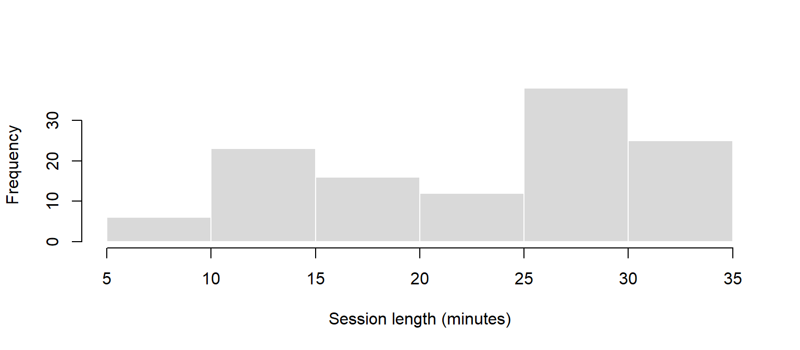
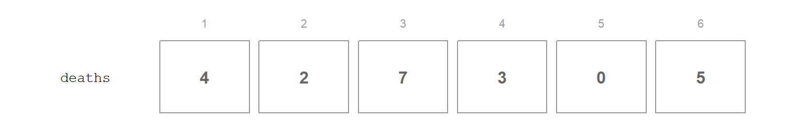
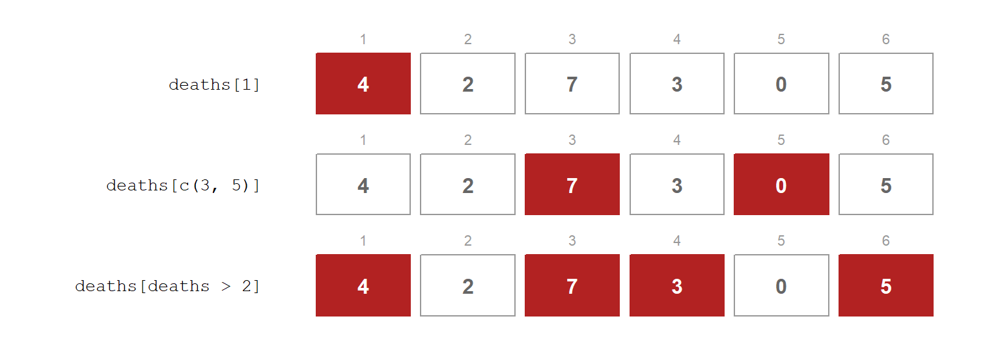

hist(sessions$session_minutes, col = pal$fill, border = "white",
main = "", xlab = "Session length (minutes)")
What R is, why we use it, and how to read and write it
R is the language every analysis in this course is written in. This page introduces it from nothing: what it is, why a games team would use it, where you type it, and the handful of ideas everything else is built from. It is written for programmers, so it says where R behaves like C# and, more usefully, where it does not. Read it before Stage 1, and come back whenever R surprises you.
Stage: before Stage 1 · Core. Time: pre-reading, about 45 minutes with R open beside you. Before this: R and an editor installed (Lab 00). Key terms: console, script, Quarto document, project, object, assignment, vector, index, function, argument, NA, data frame, package, pipe. R you will write: <-, c(), class(), length(), sum(), mean(), is.na(), $, library(), read_csv(), glimpse(), |>, count(), ?.
By the end of these notes you can:
glimpse(), and pull out a column;A playtest produces a few thousand rows of telemetry, a survey export and a frame log, and next week it produces them again for the new build. The question is not whether you can analyse them once. It is whether you can analyse them again, identically, in a minute, when the build changes.
That is the case for writing your analysis as code. A spreadsheet records the answer; a script records how you got it, so it can be checked, repeated on next week’s data, and handed to a teammate who gets exactly the same result.
R is a language built for data. Where most languages treat a table of numbers as something you have to build, R starts there. Taking the mean of a column, counting categories or drawing a histogram is one line:
hist(sessions$session_minutes, col = pal$fill, border = "white",
main = "", xlab = "Session length (minutes)")
Against a spreadsheet. Spreadsheets are fine for looking at a small table and poor at everything this course needs. They hide the steps, so nobody can check how a number was made. They invite editing the data by hand, so the original is lost. And they have to be redone, click by click, when new data arrives. A widely cited 2010 economics paper by Reinhart and Rogoff was later found to contain a spreadsheet formula that left five countries out of an average, an error nobody spotted for three years because the steps were hidden in cells. Code does not prevent mistakes, but it leaves them where someone can find them.
Against Python. Python is the other obvious choice and a perfectly good one. R is used here because its statistics and plotting are built in rather than added, and because Quarto and R work together with no setup. Everything you learn transfers: a data frame, a vector and a grouped summary are the same ideas in both.
R comes with a large set of built-in functions, called base R. On top of it, most modern R uses the tidyverse: a family of packages (readr, dplyr, ggplot2 and others) with a consistent, readable style.
This course uses both, with one way to do each job:
read_csv() to load it, then verbs such as count(), filter() and summarise(), chained with the pipe |>.mean(), median(), sd() and friends, which the tidyverse uses too.hist(), boxplot(), plot()), which are quick and good for looking while you think. ggplot2 arrives in Stage 3, for figures other people will read.You do not need to memorise this: code you find online will often do the same jobs in other ways. Where that matters, these notes show you what the other way looks like, so you can read it, and say that you do not need to write it.
There are four places R code lives, and each has a job.
flowchart LR
subgraph PROJECT["Project folder"]
direction TB
S["Script<br/>analysis.R"]
Q["Quarto document<br/>report.qmd"]
D[("data/<br/>CSV files")]
end
C["Console"]
S -->|"run a line<br/>Ctrl+Enter"| C
Q -->|"run a chunk"| C
Q -->|"Render"| H["Web page<br/>report.html"]
D -.->|"read_csv()"| S
D -.->|"read_csv()"| Q
class C,H accent
The console is where R runs. Type a line, press Enter, see the result. It is for trying things out, and nothing typed there is kept.
A script (.R file) is a text file of R code. You write lines in it and send them to the console with Ctrl+Enter (Cmd+Enter on macOS) in both VS Code and RStudio. A script is your analysis: if it is not in the script, it did not happen.
A Quarto document (.qmd file) mixes prose and R code. Rendering it runs every chunk in order and produces a web page with the text, code, numbers and plots together. Your playtest report will be one of these; the full story is in Stage 4, Interpreting and Reporting Evidence.
A project is the folder that holds everything: scripts, documents and a data/ folder. Working inside the project means R looks for files relative to that folder, which is why every path in these notes starts data/.
For your project: make one project folder for your team’s playtest analysis now, with a data/ folder inside it. Every export from every playtest goes there, unedited. You will thank yourself in March.
At its simplest, R is a calculator.
2 + 3[1] 51370 / 4[1] 342.52^10[1] 1024The [1] in front of each answer is not part of it. It is R telling you this line of output starts with the first value; you will see why it matters when an answer has many values.
To keep a value, give it a name with the assignment arrow <-, read aloud as “gets”:
score <- 1370
score[1] 1370score * 2[1] 2740score is now an object: a named value that lives in your R session until you close it or overwrite it. Names are case-sensitive (Score is a different object), cannot start with a number, and should say what the value is. session_minutes is a good name; x2 is not.
Every value has a type. class() tells you which.
class(1370)[1] "numeric"class("Scout")[1] "character"class(TRUE)[1] "logical"| Type | What it holds | Examples |
|---|---|---|
| numeric | numbers, whole or decimal | 1370, 24.6 |
| character | text, always in quotes | "Scout", "S001" |
| logical | TRUE or FALSE |
the answer to any comparison |
Comparisons produce logicals. == tests equality (a single = is not a comparison), != tests inequality, and <, >, <=, >= work as you would expect:
score > 1500[1] FALSEscore == 1370[1] TRUE"Scout" == "scout"[1] FALSEThe last one is FALSE because text comparison is case-sensitive, which matters a great deal when you come to clean real data.
R does not make you declare types. If you come from C#, this is the first big difference: there is no int score = 1370;. R works the type out from the value, and it will convert between types without asking. That is convenient until it is not:
as.numeric("24.6")[1] 24.6as.numeric("twenty")Warning: NAs introduced by coercion[1] NAThe second line returns NA, R’s marker for a missing value, with a warning. It does not stop. A column of numbers with one typo in it can quietly become a column of text, and every calculation on it then fails or misleads. Checking types is the first thing you do with any new data.
In C#, a single number is the basic unit and a collection is something you build. In R it is the other way round. The basic unit is the vector: an ordered collection of values, all of the same type. A single number is just a vector of length one, which is what the [1] was telling you.
Build a vector with c(), for combine:
deaths <- c(4, 2, 7, 3, 0, 5)
deaths[1] 4 2 7 3 0 5length(deaths)[1] 6
Arithmetic works on every element at once. This is called vectorisation, and it replaces most of the loops you would write in C#:
deaths + 1[1] 5 3 8 4 1 6deaths * 10[1] 40 20 70 30 0 50Summary functions collapse a vector to one value:
sum(deaths)[1] 21mean(deaths)[1] 3.5max(deaths)[1] 7A comparison on a vector gives one logical per element, and because R counts TRUE as 1 and FALSE as 0, summing or averaging that vector counts it:
deaths > 2[1] TRUE FALSE TRUE TRUE FALSE TRUEsum(deaths > 2)[1] 4mean(deaths > 2)[1] 0.6666667sum(deaths > 2) is “how many sessions had more than two deaths”; mean(deaths > 2) is “what proportion did”. You need to know this one: it produces a large share of the numbers in a playtest report.
Every element has the same type. Mix them and R converts everything to the most general type, usually character:
c(1, "two", 3)[1] "1" "two" "3" The numbers are now text, in quotes. This is the same silent conversion as before, and it is why a vector, and every column of a table, holds one type only.
Square brackets pull elements out of a vector. If you write C# or C++, the one mistake you will make is this: R counts from 1, not 0.
deaths[1][1] 4deaths[c(3, 5)][1] 7 0deaths[deaths > 2][1] 4 7 3 5
2] highlights the boxes containing 4, 7, 3 and 5." width="768">The last one is the important one. A logical index keeps the elements where a condition holds. It is the same idea as filtering rows of a table, which you will do with filter() in Stage 2.
For now, that is all the indexing you need to write. You will see square brackets used on whole tables in code online; the box below shows what they mean.
A function takes inputs, called arguments, and returns a result. You have already used several: c(), class(), sum(), mean().
Arguments have names and an order. args() shows both:
args(round)function (x, digits = 0, ...)
NULLround() takes x, the number, and digits, which defaults to 0. You can supply arguments by position, in the order the function declares them, or by name, in any order:
round(3.14159, 2)[1] 3.14round(x = 3.14159, digits = 2)[1] 3.14round(digits = 2, x = 3.14159)[1] 3.14All three give the same answer. Without names, position is everything, and swapping the values changes the meaning:
round(2, 3.14159)[1] 2That rounds 2 to three decimal places. Pass the main input by position and everything else by name: mean(deaths, na.rm = TRUE). It reads well, and it lets you skip arguments you are happy to leave at their defaults.
Every function has a help page. Type ?round in the console. The page lists every argument, its default, what the function returns, and examples at the bottom, which are usually the quickest way to understand it.
NA means a value should be there but was not recorded: a session length the logger lost, a survey question the player skipped. It is not zero and not empty. It means unknown.
minutes <- c(12.9, 24.6, NA, 18.8)
mean(minutes)[1] NAAny calculation involving an unknown is unknown. R will not guess. Tell it to leave the missing values out with na.rm = TRUE, and find them with is.na():
mean(minutes, na.rm = TRUE)[1] 18.76667is.na(minutes)[1] FALSE FALSE TRUE FALSEsum(is.na(minutes))[1] 1sum(is.na(x)) is the count of missing values: the same “sum a logical to count it” trick as before. Before you drop missing values, ask why they are missing. Sometimes the pattern of what is missing is itself a finding, which is the subject of Cleaning and Transforming.
A playtest table is a data frame: a set of vectors of equal length, one per column, side by side. Each column has one type; each row is one observation.
flowchart LR
V1["session<br/>S001 S002 S003"] --> DF[("data frame<br/>3 rows × 3 columns")]
V2["archetype<br/>Scout Tank Scout"] --> DF
V3["deaths<br/>4 2 7"] --> DF
class DF accent
You can build a small one by hand from vectors, which is handy for trying an idea out:
mini <- data.frame(
session = c("S001", "S002", "S003", "S004"),
archetype = c("Scout", "Tank", "Scout", "Support"),
deaths = c(4, 2, 7, 3)
)
mini session archetype deaths
1 S001 Scout 4
2 S002 Tank 2
3 S003 Scout 7
4 S004 Support 3$ pulls out one column, as a vector, and everything from the Vectors section works on it:
mini$deaths[1] 4 2 7 3mean(mini$deaths)[1] 4sum(mini$deaths > 3)[1] 2In practice you rarely type a data frame in. You read one from a file.
A package is a bundle of extra functions someone else has written. Using one is two steps:
install.packages("tidyverse") # once per computer: downloads and installs it
library(readr) # every session: makes its functions availableInstalling is like adding a library to a project; loading is like the using statement at the top of a C# file. Forget the library() call and R reports could not find function, which is the most common error in the first week.
Reading a CSV is one line with readr’s read_csv():
library(readr)
library(dplyr)
sessions <- read_csv("data/tidebreak_sessions.csv", show_col_types = FALSE)The path is relative to the project folder. read_csv() returns a tibble, the tidyverse’s version of a data frame. Everything above works on it unchanged.
Look before you do anything else. glimpse(), from dplyr, shows the size of the table and one line per column: its name, its type and its first few values.
glimpse(sessions)Rows: 120
Columns: 26
$ session_id <chr> "S001", "S002", "S003", "S004", "S005", "S006", "S00…
$ player_id <chr> "P01", "P02", "P03", "P04", "P05", "P06", "P07", "P0…
$ cohort <chr> "Regular", "Veteran", "Regular", "Novice", "Veteran"…
$ archetype <chr> "Scout", "Scout", "Scout", "Scout", "Scout", "Scout"…
$ build <chr> "A", "B", "A", "B", "A", "B", "A", "B", "A", "B", "A…
$ accuracy <dbl> 55, 54, 48, 35, 67, 51, 57, 42, 51, 47, 56, 40, 60, …
$ mobility <dbl> 84, 91, 89, 80, 97, 90, 95, 73, 86, 86, 84, 83, 92, …
$ survivability <dbl> 48, 52, 42, 35, 56, 41, 45, 30, 35, 40, 49, 27, 46, …
$ objective_control <dbl> 39, 66, 43, 47, 55, 45, 53, 39, 51, 49, 52, 35, 52, …
$ support <dbl> 52, 46, 52, 28, 38, 56, 47, 46, 34, 51, 55, 40, 53, …
$ awareness <dbl> 77, 91, 74, 74, 95, 87, 83, 67, 79, 82, 88, 67, 88, …
$ score <dbl> 1370, 1795, 1690, 1544, 2019, 1614, 1652, 1331, 1632…
$ kills <dbl> 7, 5, 5, 7, 12, 7, 6, 7, 7, 10, 9, 5, 10, 10, 5, 8, …
$ deaths <dbl> 4, 2, 2, 4, 3, 5, 4, 4, 3, 4, 3, 5, 5, 5, 5, 4, 4, 2…
$ objectives <dbl> 0, 2, 4, 2, 4, 4, 3, 2, 3, 3, 4, 1, 1, 1, 2, 4, 1, 2…
$ shots_fired <dbl> 148, 140, 190, 92, 143, 149, 143, 126, 138, 137, 118…
$ time_alive_s <dbl> 98, 105, 115, 80, 121, 115, 118, 99, 103, 71, 143, 7…
$ distance_m <dbl> 571, 520, 533, 349, 542, 566, 572, 308, 560, 451, 40…
$ session_minutes <dbl> 12.9, 24.6, 12.5, 18.8, 18.7, 25.3, 11.5, 27.0, 14.4…
$ quit_reason <chr> "Frustrated", "Lost interest", "Frustrated", "Lost i…
$ wrong_turns <dbl> 8, 4, 9, 7, 10, 9, 9, 2, 11, 2, 3, 7, 5, 6, 8, 2, 8,…
$ items_collected <dbl> 3, 5, 2, 3, 4, 0, 5, 6, 7, 5, 2, 6, 3, 0, 0, 6, 3, 7…
$ completed <lgl> TRUE, TRUE, TRUE, TRUE, FALSE, TRUE, TRUE, TRUE, FAL…
$ difficulty <dbl> 4, 4, 3, 3, 3, 5, 4, 5, 4, 5, 3, 6, 5, 5, 6, 5, 4, 4…
$ enjoyment <dbl> 2, 5, 6, 4, 3, 3, 4, 3, 4, 3, 5, 3, 4, 4, 3, 4, 3, 3…
$ comment <chr> "Could not tell where I was meant to go.", "The sign…120 rows, 26 columns. <chr> is character and <dbl> is numeric. Whether those types match what each column means is a separate question, and the subject of Data, Variables and Types.
You will also see str(), head() and summary() doing similar jobs in other people’s code. You do not need to write them.
Most analysis is a short chain of steps: take the data, do this, then that. The pipe, |>, writes the chain in the order it happens. Read it aloud as “and then”:
sessions |> count(build)# A tibble: 2 × 2
build n
<chr> <int>
1 A 60
2 B 60“Take sessions, and then count the rows for each build.” The pipe passes whatever is on its left in as the first argument of the function on its right, so this is exactly count(sessions, build). With one step there is no difference; with four steps, the piped version still reads top to bottom.
sessions |> count(build, quit_reason)# A tibble: 8 × 3
build quit_reason n
<chr> <chr> <int>
1 A Completed test 31
2 A Frustrated 20
3 A Lost interest 7
4 A Technical fault 2
5 B Completed test 38
6 B Frustrated 5
7 B Lost interest 14
8 B Technical fault 3Two columns in count() counts every combination: how each build’s sessions ended. You will add more verbs to the chain as the course goes on: group_by() and summarise() in Describing Variables, and filter(), select() and mutate() in Stage 2.
You will also see %>% in code online. It is an older pipe that does the same job. Read it as |>.
R’s error messages are terse, but they nearly always name the problem. Read the error before changing anything. Here are the ones you will meet most, produced live:
mean(sesions$score)Error:
! object 'sesions' not foundobject not found: a typo in a name (sesions), or an object you have not created yet in this session. Check spelling and capitals, and check you ran the line that creates it.
summarise_scores(sessions)Error in `summarise_scores()`:
! could not find function "summarise_scores"could not find function: a typo in a function name, or a package that is not loaded. Add the library() call.
"24" + 1Error in `"24" + 1`:
! non-numeric argument to binary operatornon-numeric argument to binary operator: arithmetic on text. A number has been read or typed as character. Check with class().
read_csv("tidebreak_sessions.csv", show_col_types = FALSE)Error: 'tidebreak_sessions.csv' does not exist in current working directory:
'C:/Users/you/L8-3DGD-Playtest-Analytics'.does not exist or cannot open file: the path is wrong. Here the data/ folder is missing from it. Paths are relative to the project folder.
unexpected symbol, unexpected string constant or unexpected ')': a syntax error, almost always a missing comma, bracket or quote just before the point R names.
A warning is not an error. An error stops the code. A warning lets it finish but tells you something may be wrong, as as.numeric("twenty") did above. Never ignore a warning without reading it.
How many Build A sessions ended in frustration? This is the first number in Planning a Playtest. Here it is built from nothing, one idea at a time.
Load and look. Every analysis starts the same way:
sessions <- read_csv("data/tidebreak_sessions.csv", show_col_types = FALSE)
glimpse(sessions |> select(build, quit_reason))Rows: 120
Columns: 2
$ build <chr> "A", "B", "A", "B", "A", "B", "A", "B", "A", "B", "A", "B"…
$ quit_reason <chr> "Frustrated", "Lost interest", "Frustrated", "Lost interes…One condition gives a logical vector, one value per session:
is_a <- sessions$build == "A"
sum(is_a)[1] 60Summing it counts the Build A sessions: 60.
Two conditions combine with &, “and”: TRUE only where both are true.
frustrated_a <- sessions$build == "A" & sessions$quit_reason == "Frustrated"
sum(frustrated_a)[1] 2020 sessions, out of 60.
Check it a second way. count() with two columns counts every combination at once:
sessions |> count(build, quit_reason)# A tibble: 8 × 3
build quit_reason n
<chr> <chr> <int>
1 A Completed test 31
2 A Frustrated 20
3 A Lost interest 7
4 A Technical fault 2
5 B Completed test 38
6 B Frustrated 5
7 B Lost interest 14
8 B Technical fault 3The A, Frustrated row says 20, the same answer. Getting a number two different ways is the cheapest check there is.
Nothing in this example is more than the ideas on this page: an object, a comparison, a logical vector, sum(), $, and one pipe.
[1] and friends are positions, not output. When a long vector wraps across lines, each line starts with the position of its first value: [1], then [19] and so on.
NA in a result means an unknown went in. Find it with is.na() before reaching for na.rm = TRUE.
A tibble prints its size and types first. # A tibble: 120 × 26 and the <chr>/<dbl> row under the names are the first check on any table.
Silence is success. Assignment prints nothing. If you want to see an object, type its name.
Red text is not always an error. Messages and warnings also print in red in most editors. Read the first word: Error stops the code, Warning does not.
Using = to compare. sessions$build = "A" is not a test. Comparison is ==.
Counting from 0. deaths[0] returns an empty vector, not the first value. R starts at 1.
Getting the case wrong. Sessions, sessions and SESSIONS are three different objects, and "Scout" does not equal "scout".
Forgetting the quotes, or adding them. "build" is the text build; build is an object called build. sum("deaths") is an error; sum(sessions$deaths) is a total.
Forgetting library(). Installed is not loaded. Every new session, and every Quarto document, needs its own library() calls.
Running lines out of order. The console remembers everything you have run in the session; a rendered document remembers only what is in it, from the top. If it works in the console and fails when rendered, something is missing from the document.
Naming an object after a function. mean <- 5 or data <- read_csv(...) works, but makes later code confusing. Pick names that describe the contents.
Leaving out na.rm = TRUE, or adding it without thinking. The first gives NA; the second silently drops data you may need to explain.
Each takes two or three minutes. Try each in the console before opening the answers.
c(1, 2, 3) * 2, sum(c(TRUE, FALSE, TRUE)), c(5, 10, 15)[2], length(c("a", "b", NA)).mean(session$deaths), sum(sessions$build = "A"), Mean(sessions$deaths).<- creates an object. Every value has a type; R converts types silently, so check them.TRUE.?name opens the help.NA means unknown and spreads through calculations. na.rm = TRUE leaves it out; is.na() finds it.read_csv(), look at it with glimpse(), pull out a column with $.|> reads “and then”. sessions |> count(build) counts sessions per build.install.packages() once, library() every session. Read the error message before changing anything.| Key term | Meaning |
|---|---|
| Console | Where R runs code and prints results; nothing is kept |
| Script | A .R file of code you keep and re-run |
| Quarto document | A .qmd file of prose and code that renders to a web page |
| Project | The folder holding an analysis; paths are relative to it |
| Object | A named value, created with <- |
| Vector | An ordered set of values of one type |
| Index | A position or condition in [ ] that selects elements |
| Function | Code that takes arguments and returns a result |
| Argument | An input to a function, given by position or by name |
NA |
A missing value: unknown, not zero |
| Data frame | A table of equal-length column vectors; a tibble is one kind |
| Package | A bundle of extra functions, installed once and loaded with library() |
| Pipe | \|>: pass the result on the left into the function on the right |
sum(deaths > 2) does, and count the lines.